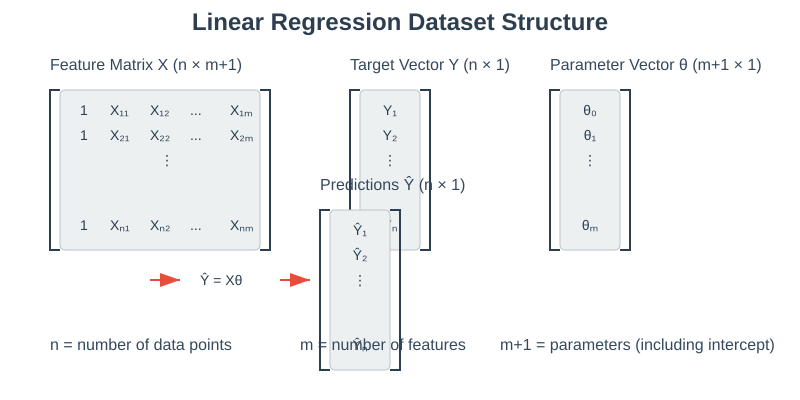
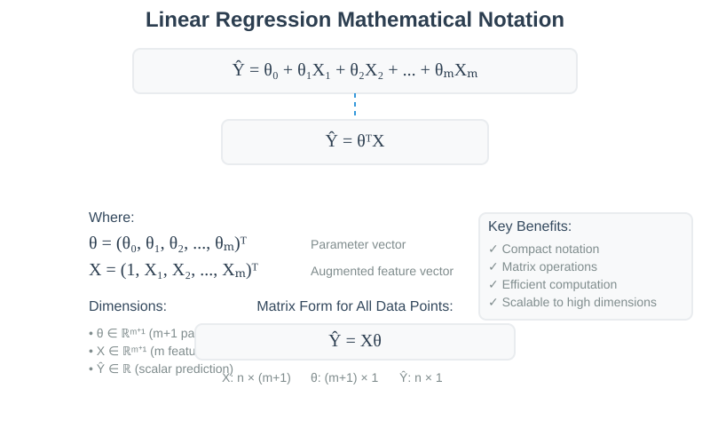
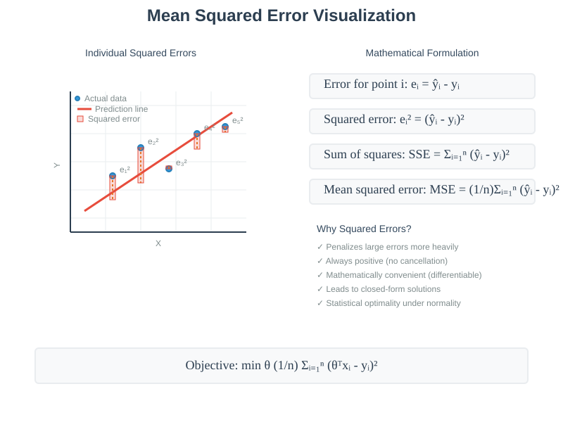
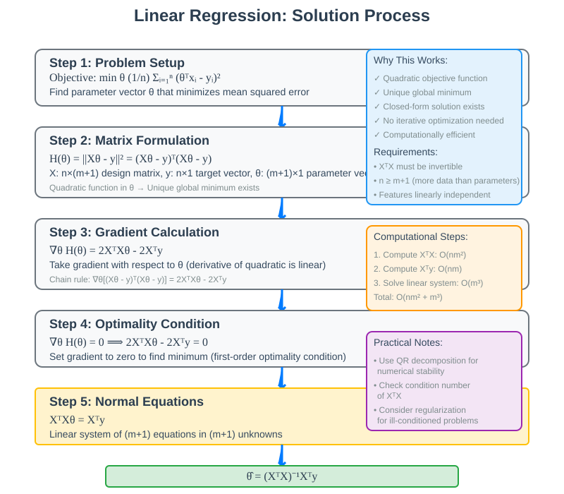

Linear Regression: Complete Guide
Quick Navigation
- Course Overview
- Dataset Structure and Notation
- The Regression Problem
- Mean Squared Error Objective
- Empirical Risk Minimization
- Overfitting and Linear Constraints
- Mathematical Formulation
- Closed-Form Solution
- Implementation Example
- Simple vs Multiple Regression
- Try It Yourself
- References & Further Reading
Course Overview
Linear regression serves as the foundational supervised learning algorithm for predicting continuous target variables. This comprehensive guide explores the theoretical foundations, mathematical derivations, and practical implementations of linear regression, emphasizing both the conceptual understanding and computational aspects that make it one of the most widely used machine learning techniques.
The core objective is to construct an optimal predictor function that minimizes prediction errors across a population, using empirical risk minimization principles to handle real-world datasets where true population statistics are unavailable.

Dataset Structure and Notation
🔵 Data Representation
Linear regression operates on structured datasets consisting of feature vectors and corresponding target values. Each dataset contains:
- n data records: Individual observations in the dataset
- m-dimensional feature vectors: X₁, X₂, ..., Xₘ representing input attributes
- Scalar target values: Y representing the quantity to predict
- Prediction goal: Build function g(X) → Ŷ for new instances
Mathematical Notation
For mathematical convenience, we represent input vectors with an augmented notation:
X = (1, X₁, X₂, ..., Xₘ)
This includes a constant term (1) at the beginning, enabling compact representation of linear predictors with intercept terms.

The Regression Problem
🟢 Objective Definition
The fundamental challenge in regression involves constructing a predictor function g(X) that performs well on the broader population from which our training data was sampled. We seek a function that minimizes prediction errors when applied to new, unseen instances.
Population Risk
The theoretical objective function represents the expected squared error over the entire population:
Risk = E[(g(X) - Y)²]
This expectation captures the average prediction error we would observe if we could test our predictor on all possible instances from the target population.
Key Design Principles
- Generalization: Predictors must perform well beyond the training set
- Population-level optimization: Focus on average performance across the entire population
- Error minimization: Systematic reduction of prediction discrepancies
Mean Squared Error Objective
🔴 Why Squared Error?
The choice of squared error as the optimization criterion stems from several theoretical and practical considerations:
Historical Precedent
Squared error has deep roots in statistical theory, particularly in the work of Gauss and Legendre on least squares estimation.
Mathematical Convenience
Squared error functions possess desirable analytical properties: - Differentiability: Smooth functions enable gradient-based optimization - Closed-form solutions: Linear regression admits exact analytical solutions - Computational tractability: Efficient algorithms exist for optimization
Practical Behavior
The quadratic penalty structure provides intuitive error weighting: - Large errors: Heavily penalized due to quadratic growth - Small errors: Lightly penalized, allowing tolerance for minor discrepancies - Balanced optimization: Focus computational effort on reducing major prediction failures
Mathematical Formulation
For a single prediction, the squared error is:
Error = (g(X) - Y)²
The population objective becomes:
Objective = E[(g(X) - Y)²]

Empirical Risk Minimization
🟡 From Theory to Practice
Since we cannot access the true population distribution, we approximate the population risk using available training data. This fundamental principle, known as empirical risk minimization, forms the computational foundation of machine learning.
Empirical Risk Approximation
The population expectation E[(g(X) - Y)²] is approximated by the sample average:
Empirical Risk = (1/n) Σᵢ₌₁ⁿ (g(Xᵢ) - Yᵢ)²
This quantity represents the mean squared prediction error on our training dataset, serving as a proxy for the true population risk.
Statistical Justification
By the Law of Large Numbers, as the sample size n increases, the empirical risk converges to the true population risk, making this approximation increasingly reliable for large datasets.
Optimization Problem
The practical regression problem becomes:
min_g (1/n) Σᵢ₌₁ⁿ (g(Xᵢ) - Yᵢ)²
Overfitting and Linear Constraints
🟠 The Overfitting Challenge
Unrestricted function optimization can lead to overfitting, where predictors achieve perfect performance on training data but fail to generalize to new instances.

Manifestations of Overfitting
- Perfect training accuracy: Zero error on all training examples
- Complex function forms: Highly irregular prediction curves
- Poor generalization: Dramatic performance degradation on new data
- High variance: Sensitivity to small changes in training data
Linear Constraint Solution
Linear regression addresses overfitting by restricting predictors to the linear function class:
Ŷ = θ₀ + θ₁X₁ + θ₂X₂ + ... + θₘXₘ
This constraint provides: - Reduced complexity: Limited parameter space prevents overfitting - Interpretability: Clear relationships between features and predictions - Computational efficiency: Fast optimization algorithms - Statistical stability: Robust performance across different datasets
Compact Vector Notation
Using augmented input vectors X = (1, X₁, ..., Xₘ) and parameter vectors θ = (θ₀, θ₁, ..., θₘ):
Ŷ = θᵀX
Mathematical Formulation
🔵 Optimization Problem Statement
Linear regression seeks the parameter vector θ that minimizes the empirical risk over the linear function class:
min_θ Σᵢ₌₁ⁿ (θᵀXᵢ - Yᵢ)²
Residual Analysis
For each training example i, the residual represents the prediction error:
residual_i = θᵀXᵢ - Yᵢ = predicted_value - observed_value

Geometric Interpretation
Linear regression finds the hyperplane (line in 2D, plane in 3D, etc.) that minimizes the sum of squared vertical distances from data points to the hyperplane.
Matrix Formulation
Organizing data into matrix form where X is the n × (m+1) design matrix and Y is the n × 1 target vector:
min_θ ||Xθ - Y||²
This formulation enables efficient computation using linear algebra libraries.
Closed-Form Solution
🟢 Analytical Solution Derivation
Linear regression admits an exact analytical solution due to the quadratic nature of the objective function.
Optimization Conditions
The objective function H(θ) = Σᵢ₌₁ⁿ (θᵀXᵢ - Yᵢ)² is quadratic in θ. Setting the gradient to zero:
∇H(θ) = 0
This yields a linear system of m+1 equations in m+1 unknowns.
Normal Equations
The optimality conditions lead to the normal equations:
XᵀXθ = XᵀY
Closed-Form Solution
When XᵀX is invertible, the unique solution is:
θ̂ = (XᵀX)⁻¹XᵀY
Computational Advantages
- Exact solution: No iterative optimization required
- Fast computation: Modern linear algebra libraries solve this efficiently
- Scalability: Handles datasets with millions of examples and thousands of features
- Numerical stability: Well-conditioned problems yield reliable solutions

Implementation Example
🔵 Marketing Campaign Analysis
Dataset Characteristics: - n = 200: Data records from different markets - m = 3: Advertising channels (TV, Radio, Newspaper) - Target: Sales volume prediction
Model Parameters
The optimization yields the parameter vector:
θ̂ = [2.94, 0.046, 0.19, -0.001]ᵀ
Prediction Formula
Sales = 2.94 + 0.046 · (TV) + 0.19 · (Radio) - 0.001 · (Newspaper)
Interpretation
- Intercept (2.94): Baseline sales with zero advertising spend
- TV coefficient (0.046): Each unit of TV spending increases sales by 0.046 units
- Radio coefficient (0.19): Radio advertising shows stronger per-unit impact
- Newspaper coefficient (-0.001): Unexpected negative relationship requires investigation
👉 Try It Yourself

import numpy as np
import pandas as pd
from sklearn.linear_model import LinearRegression
# Load marketing dataset
data = pd.read_csv('marketing_data.csv')
X = data[['TV', 'Radio', 'Newspaper']]
y = data['Sales']
# Fit linear regression model
model = LinearRegression()
model.fit(X, y)
# Extract coefficients
print(f"Intercept: {model.intercept_:.3f}")
print(f"Coefficients: {model.coef_}")
Simple vs Multiple Regression
🟡 Comparative Analysis
The marketing example reveals important differences between simple and multiple regression approaches.
Simple Linear Regression (Newspaper only)
Sales = 12.35 + 0.055 · (Newspaper)
Multiple Linear Regression (All channels)
Sales = 2.94 + 0.046 · (TV) + 0.19 · (Radio) - 0.001 · (Newspaper)
Key Observations
Coefficient Magnitude Changes
- Simple regression: Newspaper coefficient = 0.055 (positive, substantial)
- Multiple regression: Newspaper coefficient = -0.001 (negative, minimal)
Statistical Interpretation
This difference suggests confounding variables where: - Newspaper spending correlates with other advertising channels - The apparent relationship in simple regression reflects indirect effects - Multiple regression isolates the direct effect of each channel
Practical Implications
- Variable selection: Multiple regression provides more accurate causal inference
- Confounding control: Including relevant variables reduces bias
- Interpretation complexity: Coefficients represent partial effects holding other variables constant
Model Comparison Framework
| Aspect | Simple Regression | Multiple Regression |
|---|---|---|
| Variables | Single predictor | Multiple predictors |
| Interpretation | Total association | Partial association |
| Confounding | Not controlled | Controlled |
| Complexity | Low | Higher |
| Accuracy | Lower (typically) | Higher (typically) |
Try It Yourself
🔧 Hands-On Implementation
Google Colab Notebooks
Basic Linear Regression

Advanced Marketing Analysis

Practical Exercises
- Data Preprocessing: Handle missing values and feature scaling
- Model Fitting: Implement both sklearn and manual matrix solutions
- Residual Analysis: Examine prediction errors and model assumptions
- Cross-Validation: Assess generalization performance
- Feature Engineering: Create polynomial and interaction terms
Extended Applications
- Housing Price Prediction: Real estate valuation using property features
- Stock Price Modeling: Financial time series analysis
- Medical Diagnosis: Risk factor quantification in healthcare
- Environmental Science: Climate variable relationships
Hugging Face Integration
Explore pre-trained regression models and datasets: - Hugging Face Regression Models - Marketing Dataset Repository
References & Further Reading
📚 Essential Resources
Academic Papers
- Gauss, C.F. (1809): "Theory of Motion of Heavenly Bodies" - Original least squares method
- Legendre, A.M. (1805): "New Methods for Determining Orbits of Comets" - Independent development of least squares
- Hastie, T., Tibshirani, R., Friedman, J. (2009): "The Elements of Statistical Learning" - Comprehensive treatment
Industry Documentation
- Scikit-learn Linear Regression - Implementation details and best practices
- NumPy Linear Algebra - Matrix operations for manual implementation
- Pandas Data Analysis - Data preprocessing for regression
Advanced Topics
- Ridge Regression: L2 regularization for high-dimensional data
- Lasso Regression: L1 regularization with feature selection
- Bayesian Linear Regression: Probabilistic approach with uncertainty quantification
- Generalized Linear Models: Extensions beyond continuous targets
Research Applications
- Google AI Research - Latest developments in regression techniques
- Microsoft Research - Industrial applications and scalability
- Facebook Research - Large-scale regression systems
Interactive Learning
- Kaggle Learn Courses - Practical regression projects
- Coursera Machine Learning - Andrew Ng's foundational course
- edX MIT Introduction to Machine Learning - Theoretical foundations